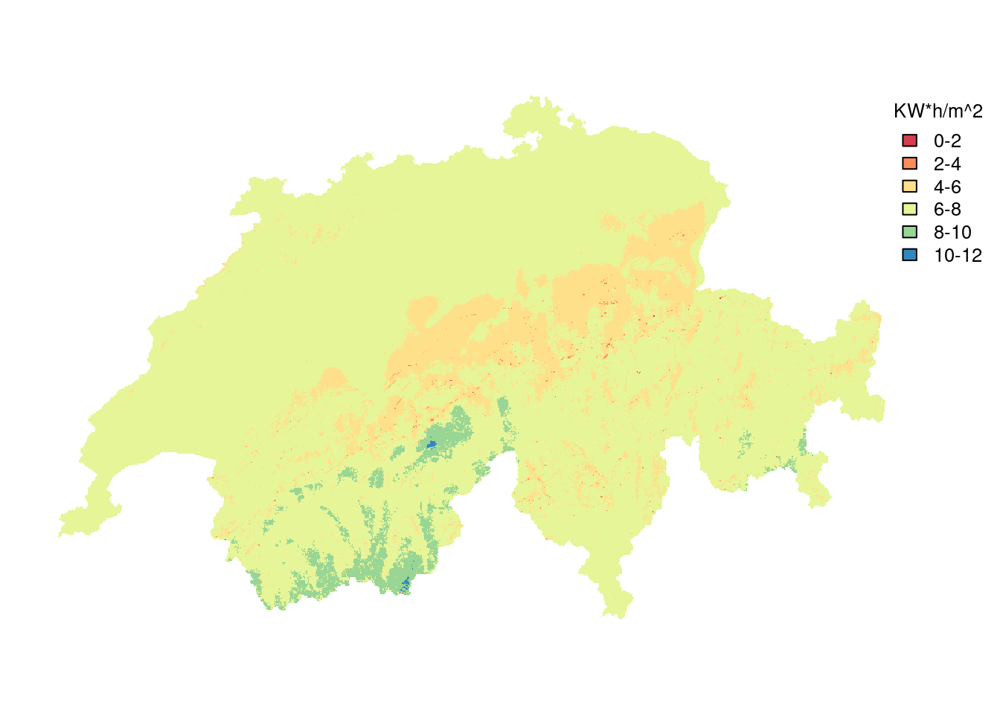

Libraries used for data processing
library(sf)
library(terra)
library(dplyr)
library(units)
library(sfarrow)
library(readr)Switzerland’s solar radiation potential by land types
The Sunwell group utilized solar radiation modeling to estimate the potential solar energy (measured in Kilowatt hours per square meter) across Switzerland at a 25m resolution. The objective of this study is to determine the solar potential for different land use categories, including (1) agricultural areas, (2) standing water, and (3) areas adjacent to national roads. Each of these three categories is further divided into subcategories, which will be elaborated on below.
This report presents a detailed overview of the entire processing pipeline and showcases the findings. It is composed using quarto, which integrates code into the document. However, the document was constructed using cached outputs rather than performing intensive computations.
library(sf)
library(terra)
library(dplyr)
library(units)
library(sfarrow)
library(readr)library(tmap)
library(units)
library(stringr)
library(forcats)
library(ggplot2)
options("sf_max.plot"=1)
# experimental: dont print the "[" and "]" sorrounding the units
units_options("group" = c("",""))print_with_units <- function(input, output_unit = NULL, digits = 2, big.mark = "'", sep = " ", scientific = FALSE, ...){
if(is.null(output_unit)){
output_unit <- units(input)
}
val <- set_units(input, output_unit,mode = "standard")
if(!is.null(digits)){
val <- round(val, digits = digits)
}
capture.output(print(val, digits = 1, scientific = scientific, big.mark = big.mark))
# paste(
# formatC(as.numeric(val),digits = digits, format = format,big.mark = big.mark),
# units::deparse_unit(val),
# sep = sep)
}
mykable <- function(df, linesep = "<br>"){
colnames_old <- df |>
colnames() |>
str_replace_all("_", " ") |>
str_to_title()
col_units <- purrr::map(df, \(y) tryCatch(as.character(units(y)),error = \(x)""))
colnames_new <- paste0(colnames_old, linesep, col_units)
df |>
drop_units() |>
kableExtra::kable(col.names = colnames_new, escape = FALSE)
}# extract values from a raster file, which has units
extract_with_units <- function(rasterfile, vector, output_unit = NULL, fun = "mean"){
input_unit <- units(rasterfile)
stopifnot(input_unit != "")
if(is.null(output_unit)){
output_unit <- input_unit
}
vector_vect <- vect(vector)
extracted <- terra::extract(rasterfile,vector_vect,fun = fun)[,2]
extracted |>
units::set_units(input_unit,mode = "standard") |>
set_units(output_unit,mode = "standard")
}
global_with_units <- function(raster, fun = "mean", na.rm = TRUE, output_unit = NULL){
input_unit <- units(raster)
stopifnot(input_unit != "")
if(is.null(output_unit)){
output_unit <- input_unit
}
res <- global(raster, fun, na.rm = na.rm)
res <- res[,1]
units(res) <- input_unit
set_units(res, output_unit,mode = "standard")
}The data for this analysis was mostly gathered by the Sunwell group. The core of the analysis is the raster data mentioned above and described in more detail below. add more information
Table 1 is a listing of all the datasets used in this analysis. This data is provided by Sunwell and is described in more detail here.
| Dataset | Provider | Data Type | Filename(s) |
|---|---|---|---|
| Winter Production (30 Degree tilt) | Sunnwell | Raster (Geotiff), 25m Resolution, W/m2 | tilt_30_winter.tif |
| Summer Production (30 Degree tilt) | Sunnwell | Raster (Geotiff), 25m Resolution, W/m2 | tilt_30_summer.tif |
| Standing Water | swisstopo | Polygon data (shapefile) | OBJEKTART_Stehende Gewaesser.shp |
| Dams | swisstopo | Polygon data (shapefile) | OBJEKTART_Staumauer.shp |
| Farm Land | Cantons (provided via geodienste.ch) | Polygon data (shapefile) | perimeter_ln_sf.shp; lwb_perimeter_ln_sf_lv95.gpkg |
| Roads | swisstopo | Line data (shapefile) | swissTLM3D_TLM_STRASSE.shp |

Before processing the datasets described in Table 1, some preprocessing steps were taken. These steps were done using the command line tools gdal and ogr2ogr and are documented below.
Preprocessing invoved the following steps:
# Reporject rasterdata to EPSG 2056
DIR=data/Dataset_SONNENLAND/Radiation
gdalwarp -t_srs EPSG:2056 -tr 25 25 -overwrite $DIR/tilt_30_summer.tif $DIR/tilt_30_summer_2056.tif
gdalwarp -t_srs EPSG:2056 -tr 25 25 -overwrite $DIR/tilt_30_winter.tif $DIR/tilt_30_winter_2056.tif
# Merge the two vector datasets into one single geopackage
DIR2=data/Dataset_SONNENLAND/Classification/Standing_Water
ogr2ogr $DIR2/stehende_gewaesser_merged.gpkg $DIR2/"OST/OBJEKTART_Stehende Gewaesser.shp" -nln stehende_gewaesser
ogr2ogr $DIR2/stehende_gewaesser_merged.gpkg $DIR2/"WEST/OBJEKTART_Stehende Gewaesser.shp" -nln stehende_gewaesser -append
ogr2ogr $DIR2/stehende_gewaesser_merged.parquet $DIR2/stehende_gewaesser_merged.gpkg
# convert swissboundaries into a geopackage
DIR3=data/swissboundaries3d_2023-01_2056_5728.gdb
ogr2ogr data/swissBOUNDARIES3D_1_4_LV95_LN02.gpkg \
$DIR3/swissBOUNDARIES3D_1_4_LV95_LN02.gdb
# DIR4=data/Dataset_SONNENLAND/Classification/Agricultural/Farming_most_cantons/shapefiles/lwb_perimeter_ln_sf
# ogr2ogr $DIR4/perimeter_ln_sf.parquet $DIR4/perimeter_ln_sf.shp
#
# DIR5=data/Dataset_SONNENLAND/Classification/Agricultural/farming_ar_nw_ow_vd/geopackage
# ogr2ogr $DIR5/lwb_perimeter_ln_sf_lv95.parquet $DIR5/lwb_perimeter_ln_sf_lv95.gpkg
dir_roads=data/Dataset_SONNENLAND/Classification/ROADS
ogr2ogr $dir_roads/swissTLM3D_TLM_STRASSE.parquet $dir_roads/swissTLM3D_TLM_STRASSE.shp## File paths ##################################################################
summer_path <- "data/Dataset_SONNENLAND/Radiation/tilt_30_summer_2056.tif"
swissboundaries_path <- "data/swissboundaries3d_2023-01_2056_5728.gdb/swissBOUNDARIES3D_1_4_LV95_LN02.gpkg"
stehende_gewaesser_path <- "data/Dataset_SONNENLAND/Classification/Standing_Water/stehende_gewaesser_merged.parquet"
staumauer_path <- "data/Dataset_SONNENLAND/Classification/DAMS/OBJEKTART_Staumauer.shp"
roads_path <- "data/Dataset_SONNENLAND/Classification/ROADS/swissTLM3D_TLM_STRASSE.parquet"
## Switzerland's borders #######################################################
schweiz <- st_read(swissboundaries_path, "TLM_LANDESGEBIET") |>
st_zm() |>
filter(NAME != "Liechtenstein") |>
st_union() |>
st_as_sf()
st_geometry(schweiz) <- "geom"
st_layers(swissboundaries_path)
cantons <- st_read(swissboundaries_path, "TLM_KANTONSGEBIET") |>
st_zm() |>
group_by(NAME) |>
summarise()
canton_names <- read_csv("data/cantons.csv") |> arrange(canton_long)
# test
# anti_join(cantons, canton_names, by = c("NAME" = "canton_long"))
cantons <- left_join(cantons, canton_names, by = c("NAME" = "canton_long"))
## Solar potential raster ######################################################
summer_rast <- rast(summer_path)
units(summer_rast) <- "W*h/m^2"
# !time!
summer_ch <- crop(summer_rast, vect(schweiz))
summer_ch <- mask(summer_ch, vect(schweiz),filename = "data-intermediate/summer-ch.tif", overwrite = TRUE)
units(summer_ch) <- "W*h/m^2"
# !time!
schweiz$radiation_mean <- global_with_units(summer_ch)
schweiz$area <- st_area(schweiz)
schweiz$radiation_total <- schweiz$radiation_mean*schweiz$area
save(schweiz, file = "data-intermediate/schweiz.Rda")
## Standing Water ##############################################################
stehende_gewaesser <- sfarrow::st_read_parquet(stehende_gewaesser_path) |>
st_zm() |>
st_set_crs(2056)
staumauern <- st_read("data/Dataset_SONNENLAND/Classification/DAMS/OBJEKTART_Staumauer.shp")
# I had initially thought that we would have select lakes within a distance to
# "staumauern" and so introduce a bit of tolerance. It turns out however, that all
# "staumauern" actually intersect the "stauseen" they are closest to, so the distance is
# usually 0. They usually touch (but not always), but they always intersect.
# !time!
stehende_gewaesser <- st_join(stehende_gewaesser, transmute(staumauern, staumauer = row_number()))
# !time!
stehende_gewaesser$radiation_mean <- extract_with_units(summer_ch, stehende_gewaesser)
stehende_gewaesser$area <- st_area(stehende_gewaesser)
stehende_gewaesser$radiation_total <- stehende_gewaesser$radiation_mean * stehende_gewaesser$area
stehende_gewaesser <- select(stehende_gewaesser, radiation_mean, area, radiation_total,staumauer)
save(stehende_gewaesser, file = "data-intermediate/stehende_gewaesser.Rda")
## Agriculture #################################################################
## Roads ######################################################################load("data-intermediate/schweiz.Rda")
area_ch <- print_with_units(schweiz$area, "km^2",digits = 0)
radiation_ch_frac <- schweiz$radiation_total*0.5*0.2
radiation_total_str <- print_with_units(schweiz$radiation_total, "TW*h")
radiation_ch_frac_str <- print_with_units(radiation_ch_frac, output_unit = "TW*h",digits = 0)This passage presents an analysis of the solar energy potential in Switzerland during the summer season. The total radiation during this period across the entire country, which has an area of 41’301 km^2, is estimated to be 27’448 h*TW during the summer months. However, not all of this radiation can be harnessed by solar panels, as the type of panel used affects the amount of radiation that is captured. In this study, the fraction of radiation that falls onto a solar panel is assumed to be 0.5, or 50%, based on the global capture rate (GCR).
Additionally, solar panels have an efficiency rate that determines how much of the captured radiation can be converted into usable energy. In this study, the efficiency rate is assumed to be 0.2, or 20%, meaning that only 20% of the solar radiation captured by the panel can be converted into electricity.
Using these assumptions, the energy potential for a given area can be calculated using the following formula:
\[E_{pot} = \text{Radiation} \times 0.5 \times 0.2\]
Thus, for the entire country of Switzerland, the energy potential during the summer season is estimated to be 2’745 h*TW.
load("data-intermediate/stehende_gewaesser.Rda")
stehende_gewaesser_summer_total <- sum(stehende_gewaesser$radiation_total, na.rm = TRUE)
stehende_gewaesser_summer_frac <- stehende_gewaesser_summer_total*0.5*0.2
stehende_gewaesser_summer_frac_str <- print_with_units(stehende_gewaesser_summer_frac, "TW*h")
percent_pretty <- \(x, digits = 2, append = "%", sep = " ") paste(formatC(as.numeric(x),format = "f",digits = digits), append, sep = sep)
gewaesser_percent <- percent_pretty(stehende_gewaesser_summer_frac/radiation_ch_frac*100)The energy potential for standing water, which takes into account both the GCR and efficiency rate, is estimated to be 55 h*TW. This potential represents approximately 1.99 % of the overall solar potential in Switzerland.
It is important to differentiate between two types of standing water: artificial bodies of water primarily utilized for power production and natural bodies of water. The former category has distinct characteristics that make it an attractive location for solar power generation. (be more specific here) To categorize standing water, the dataset “Staumauer” (hearafter referred to as “dams”) was used as a reference. All standing waters that intersect a dam are classified as artificial reservoirs. In contrast, all standing waters that do not intersect a dam are considered natural.
stehende_gewaesser_by_type <- stehende_gewaesser |>
st_drop_geometry() |>
group_by(Type = ifelse(is.na(staumauer),"Natural","Reservoir")) |>
summarise(
radiation_total = set_units(sum(radiation_total, na.rm = TRUE), GW*h),
) |>
mutate(
Radiation_corrected = radiation_total*0.5*0.2,
Prop_of_national = set_units(Radiation_corrected/radiation_ch_frac, "%")
)
mykable(stehende_gewaesser_by_type)| Type |
Radiation Total GW*h |
Radiation Corrected GW*h |
Prop Of National % |
|---|---|---|---|
| Natural | 488923.38 | 48892.338 | 1.7812798 |
| Reservoir | 57024.67 | 5702.467 | 0.2077562 |
The agricultural areas of Switzerland are stored in two vector datasets. Currently, there the data of two cantons are missing, TI and AR (see #8). To calculate the potential power production in these areas, the vector datasets were first rasterized with the same extent and cell size as the dataset Summer Production (see Table 1), with a fixed value of 1. Then, the two rasters werde multiplied, thus generating a new raster with solar radiation values only in agricultural areas. The mean value of this new raster was multiplied by the summed area of all polygons. These steps was then repeated for just the subset Regular Farmland and Summer Grazing Land, respectively.
raster=data/Dataset_SONNENLAND/Radiation/tilt_30_summer_2056.tif
tempdir=data-intermediate
# working with multiple values does not seem to work
#te=$(gdalinfo $rasterdir/tilt_30_summer_2056.tif -json | jq -r '.cornerCoordinates | " " + (.upperLeft[0]|tostring) + " " + (.lowerLeft[1]|tostring) + " " + (.lowerRight[0]|tostring) + " " + (.upperRight[1]|tostring)')
#tr=$(gdalinfo $rasterdir/tilt_30_summer_2056.tif | grep "Pixel Size" | cut -d'(' -f2 | cut -d')' -f1 | awk -F',' '{printf("%1.0f %1.0f\n", $1, $2)}')
xmin=$(gdalinfo $raster -json | jq -r .cornerCoordinates | jq -r ".lowerLeft[0]")
ymin=$(gdalinfo $raster -json | jq -r .cornerCoordinates | jq -r ".lowerLeft[1]")
xmax=$(gdalinfo $raster -json | jq -r .cornerCoordinates | jq -r ".upperRight[0]")
ymax=$(gdalinfo $raster -json | jq -r .cornerCoordinates | jq -r ".upperRight[1]")
xres=$(gdalinfo $raster | grep "Pixel Size" | cut -d'(' -f2 | cut -d')' -f1 | awk -F',' '{print $1}')
yres=$(gdalinfo $raster | grep "Pixel Size" | cut -d'(' -f2 | cut -d')' -f1 | awk -F',' '{print $2}')
## Agriculture #################################################################
lwb=data/Dataset_SONNENLAND/Classification/Agricultural/Farming_most_cantons/shapefiles/lwb_perimeter_ln_sf/perimeter_ln_sf.shp
lwb2=data/Dataset_SONNENLAND/Classification/Agricultural/farming_ar_nw_ow_vd/geopackage/lwb_perimeter_ln_sf_lv95.gpkg
# for the full datasets
temprast1=$tempdir/perimeter_ln_sf.tif
temprast2=$tempdir/summer_perimeter_ln_sf.tif
description="all values"
gdal_rasterize -burn 1 -ot Byte -co COMPRESS=DEFLATE -te $xmin $ymin $xmax $ymax -tr $xres $xres $lwb $temprast1
gdal_rasterize -burn 1 $lwb2 $temprast1
gdal_calc.py -A $raster -B $temprast1 --outfile=$temprast2 --calc="A*B"
echo $description", " $(gdalinfo -stats $temprast2 | grep STATISTICS_MEAN | awk -F= '{print $2}') > $tempdir/summer_perimeter_ln_sf_mean.txt
# for the individual datasets
temprast1=$tempdir/perimeter_ln_sf2.tif
temprast2=$tempdir/summer_perimeter_ln_sf2.tif
description="Landwirtschaftliche Nutzfläche"
sql="SELECT * FROM perimeter_ln_sf WHERE "typ" = 'Landwirtschaftliche Nutzfläche'"
# the following lines are pretty identical to the above. Differenes:
# - the sql statement
# - the output is appended to the existing file
gdal_rasterize -sql $sql -burn 1 -ot Byte -co COMPRESS=DEFLATE -te $xmin $ymin $xmax $ymax -tr $xres $xres $lwb $temprast1
gdal_rasterize -sql $sql -burn 1 $lwb2 $temprast1
gdal_calc.py -A $raster -B $temprast1 --outfile=$temprast2 --calc="A*B"
echo $description", " $(gdalinfo -stats $temprast2 | grep STATISTICS_MEAN | awk -F= '{print $2}') >> $tempdir/summer_perimeter_ln_sf_mean.txt
temprast1=$tempdir/perimeter_ln_sf3.tif
temprast2=$tempdir/summer_perimeter_ln_sf3.tif
description="Sömmerungsgebiet"
sql="SELECT * FROM perimeter_ln_sf WHERE "typ" = 'Sömmerungsgebiet'"
# the following lines are identical to the above.
gdal_rasterize -sql $sql -burn 1 -ot Byte -co COMPRESS=DEFLATE -te $xmin $ymin $xmax $ymax -tr $xres $xres $lwb $temprast1
gdal_rasterize -sql $sql -burn 1 $lwb2 $temprast1
gdal_calc.py -A $raster -B $temprast1 --outfile=$temprast2 --calc="A*B"
echo $description", " $(gdalinfo -stats $temprast2 | grep STATISTICS_MEAN | awk -F= '{print $2}') >> $tempdir/summer_perimeter_ln_sf_mean.txt
# this is for both datasts and subsets
ogr2ogr -dialect sqlite -sql "SELECT typ, SUM(flaeche_m2) as flaeche_m2, 'lwb1' as file FROM perimeter_ln_sf GROUP BY typ " $tempdir/lwb1_summary.csv $lwb
ogr2ogr -dialect sqlite -sql "SELECT typ, SUM(flaeche_m2) as flaeche_m2, 'lwb2' as file FROM perimeter_ln_sf GROUP BY typ " $tempdir/lwb2_summary.csv $lwb2
## Roads #######################################################################
roads=data/Dataset_SONNENLAND/Classification/ROADS/swissTLM3D_TLM_STRASSE.shp
temprast1=$tempdir/roads_bund.tif
temprast2=$tempdir/summer_roads_bund.tif3
tempgpkg=$tempdir/roads_bund.gpkg
sql="SELECT buff.geom, ST_AREA(buff.geom) as area_m2 FROM (SELECT ST_UNION(ST_BUFFER(geometry, 10)) as geom FROM swissTLM3D_TLM_STRASSE WHERE EIGENTUEME = 'Bund') buff"
description="Bundesstrassen"
ogr2ogr -dialect sqlite -sql $sql $tempgpkg $roads -nln roads_bund
gdal_rasterize -burn 1 -ot Byte -co COMPRESS=DEFLATE -te $xmin $ymin $xmax $ymax -tr $xres $xres $tempgpkg $temprast1
gdal_calc.py -A $raster -B $temprast1 --outfile=$temprast2 --calc="A*B"
echo $description", " $(gdalinfo -stats $temprast2 | grep STATISTICS_MEAN | awk -F= '{print $2}') > $tempdir/summer_road_mean.txt
ogr2ogr $tempgpkg.csv $tempgpkg summer_perimeter_ln_sf <- read_csv("data-intermediate/summer_perimeter_ln_sf_mean.txt",c("dataset","mean_value"))
units(summer_perimeter_ln_sf$mean_value) <- "W*h/m^2"
lwb_summary <- read_csv(list.files("data-intermediate", pattern = "lwb\\d_summary.csv",full.names = TRUE)) |> group_by(typ) |>
summarise(flaeche_m2 = sum(flaeche_m2))
lwb_summary2 <- lwb_summary |>
ungroup() |>
summarise(typ = "all values", flaeche_m2 = sum(flaeche_m2)) |>
rbind(lwb_summary)
units(lwb_summary2$flaeche_m2) <- "m^2"
summer_perimeter_ln_sf2 <- left_join(summer_perimeter_ln_sf, lwb_summary2, by = c(dataset = "typ")) |>
mutate(
radiation = mean_value * flaeche_m2,
radiation_corrected = radiation * 0.5 * 0.2
)
summer_perimeter_ln_sf2 |>
transmute(
Categroy = dataset,
Area = set_units(flaeche_m2, km^2),
Radiation = set_units(radiation, TW*h),
Radiation_corrected = set_units(radiation_corrected, TW*h)
) |>
mykable()| Categroy |
Area km^2 |
Radiation h*TW |
Radiation Corrected h*TW |
|---|---|---|---|
| all values | 16207.954 | 1174.5602 | 117.45602 |
| Landwirtschaftliche Nutzfläche | 11057.022 | 105.6962 | 10.56962 |
| Sömmerungsgebiet | 5150.932 | 121.9738 | 12.19738 |
From the SwissTLM roads dataset, all roads belonging to FEDRO were buffered with a distance of 10m. The result was rasterized and the mean solar radiation of all cells was calculated. With this mean value and the surface area of the buffered roads, the solar potential was calculated.
roads_buffered_area <- read_csv("data-intermediate/roads_bund.gpkg.csv",col_select = "area_m2")
roads_buffered_mean <- read_csv("data-intermediate/summer_road_mean.txt",col_names = c("dataset","mean_value"))
roads_buffered <- cbind(roads_buffered_area, roads_buffered_mean)
units(roads_buffered$area_m2) <- "m2"
units(roads_buffered$mean_value) <- "W*h/m^2"
roads_potential <- set_units(roads_buffered$area_m2*roads_buffered$mean_value, GW*h)
roads_potential_corrected <- roads_potential*0.5*0.2The solar potential alongside roads is 20 GWh. Taking efficiency and GWR into consideration, the corrected solar potential alongside roads is 2 GWh.